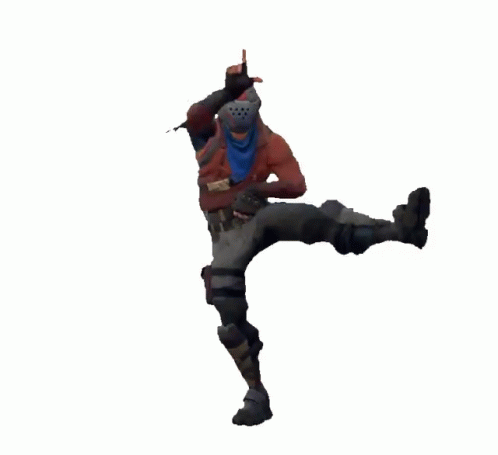

Zadanie 1 kod
<html> <head> <title> Zadanie 1 Drywa </title> <script language="JavaScript"> function WinOpen_drywa() { window.open("obraz.html","okienko","toolbar=no,directories=no,menubar=no,height=700,width=1000,top=150,left=200"); } </script> </head> <body> <form> <input type="button" name="przycisk" value="Nowa Strona" onclick="WinOpen_drywa(' ')"> <br><br> <input type="button" value="zamknij okno" onclick="window.close()"/> </form> </body> </html>
obraz.html
<html> <head> <script type="text/javascript"> function okno_zamknij_drywa() { window.close() } </script> </head> <body> <h3>Kiedy powstał?</h3> W 1995 roku. <h3>Dlaczego jest to język skryptowy?</h3> JavaScript jest głownie językiem skryptowym <h3>Gdzie jest wykonywany JS (klient lub serwer)</h3> Klient<br> <h3>Dlaczego jest to bezpieczne narzędzie?</h3> Ze względów bezpieczeństwa JavaScript ma znacznie ograniczone uprawnienia dostępu do zasobów komputera, przy użyciu którego przeglądana jest dana strona, a wszelkie odwołania do funkcji i obiektów wykonywane są w trakcie wykonywania programu. <br> <h3>Czy jest to język obiektowy , jeśli tak to dlaczego?</h3> JavaScript jest językiem zorientowanym obiektowo, ponieważ implementuje enkapsulację, polimorfizm, dziedziczenie<br><br> Wytłumaczenie:<br> <h3>< input type="button" name="przycisk" value="Nowa Strona" onclick="WinOpen_drywa(' ')" ></h3> Nowy obiekt: przycisk o code-nazwie przycisk. Z nazwą „Nowy kraj”. Po naciśnięciu przycisku uruchomi się funkcja WinOpen_drywa(' ').<br> <h3>window.open("obraz.html","okienko","toolbar=yes,directories=no,menubar=no,height=280,width=160,top=200,left=200");</h3> otwiera image.html w osobnym oknie z parametrami <br><br> toolbar=no -> ukrywa standardowy pasek narzędzi<br> directories=no -> ukrywa pasek adresowy<br> menubar=no -> ukrywa menu przeglądarki<br> height=280 -> wysokość okna<br> width=160 -> szerokość okna<br> top=200 -> górna pozycja okna<br> left=200 -> lewa pozycja okna<br> <h3>window.close()</h3> zamyka otwarte okno funkcją close();<br>  <br> <input type="button" value="zamknij okno" onclick="okno_zamknij_drywa()"/> </body> </html>